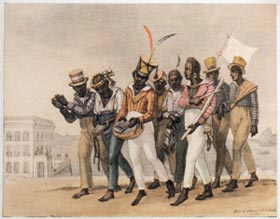

Locais de resgate, naturalidade e residência dos trabalhadores:
De acordo com dados do Ministério Público do Trabalho, foram resgatados mais de 300 trabalhadores em situação de trabalho escravo no estado do Piauí entre 2017 e 2022. Muitos dos trabalhadores eram migrantes de outros estados, como Maranhão e Bahia, e estavam em condições degradantes de trabalho e moradia.
Os setores econômicos mais frequentemente envolvidos e com maior número de trabalhadores resgatados no estado do Piauí
Segundo dados do Ministério Público do Trabalho, entre 2017 e 2021, os setores com maior número de trabalhadores resgatados no Piauí foram a produção de carvão vegetal, seguida pela produção de carnaúba e a criação de gado. Outros setores também foram identificados como envolvidos em casos de trabalho escravo no Piauí, como a construção civil, a mineração e o trabalho doméstico.
